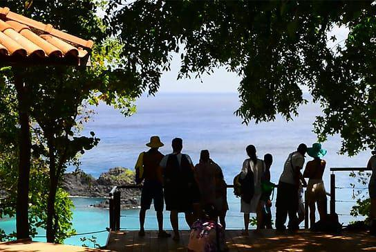
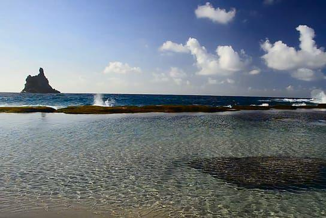
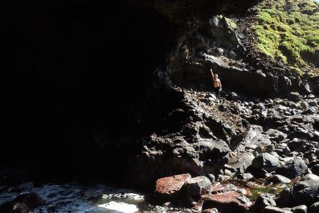

Trilhas de Noronha
TRILHA ALVORECER NO MIRANTE DA BAÍA DOS GOLFINHOS
(acessível)
Trilha realizada às 6:30 h da manhã para observação no Mirante dos Golfinhos. O passeio é para observar os golfinhos que tem seu abrigo nessa baía para acasalar, alimentar os filhotes e descansar. É de manha que eles retornam para descansar, após passarem a noite em busca de alimentos em alto mar. A Baía dos Golfinhos é um verdadeiro santuário e o mirante fica na beira de um penhasco de 70 metros de altura. Trilha em plataforma suspensa, construída para preservar a vegetação local e dar acessibilidade a todas às pessoas. Saida e retorno do PIC Sancho. Ideal para Cadeirantes e pessoas com dificuldades de locomocao.
DIFICULDADE: LEVE
ATALAIA (TRILHA LONGA)
Na trilha longa da Praia da Atalaia você poderá visitar a piscina natural, conhecida como berçário de tubarões e outros animais marinhos, além de apreciar o visual exótico e selvagem desta parte da ilha. O mergulho na piscina tem um numero restrito de pessoas ao dia, e é determinado pela maré, por isso os horários podem variar.
Após a passagem pela praia e piscina, a trilha segue para mais 02 pontos de mergulho. Ao total o passeio tem duração média de 4 a 5 horas. A caminhada em alguns pontos pode ser complicada, feitas por cima de pedras, e exige um nível de disposição e preparo físico mais altos. A trilha termina na Praia Das Caieiras. Para o mergulho na piscina natural é proibido o uso de protetor solar. Nesse passeio é recomendado levar água, chapéus/bonés, protetor solar, lanche e usar tênis.
DIFICULDADE: MÉDIA/ALTA
ATALAIA (CURTA)
Trilha a partir do ponto de apoio ao lado do Morro do Francês até a praia da Atalaia com sua piscina natural e grande diversidade marinha, onde é permitido fazer flutuação por 30 minutos. O mergulho na piscina tem um número restrito de pessoas ao dia.
Proibido uso de protetor solar devido a fragilidade dos corais. Somente nos horários de maré baixa .
DIFICULDADE: MÉDIA
TRILHA DO CAPIM AÇU
A trilha começa na Vila da Quixaba. Essa é uma trilha que exige um bom preparo físico pois além de um relevo bem desafiador, é um trilha longa que tem duração de até 7 horas. O horário da trilha depende da maré.
A caminhada se inicia na Vila da Quixaba, em meio ao Capim Açu, que pode ter até 2 metros de altura e muita mata, e segue até o Mirante do VOR, onde se encontram algumas ruínas, e uma paisagem impressionante. Há uma pequena pausa para descanso, e então a trilha continua, agora em direção a uma descida de morro, seguindo para a Caverna do Capim Açu e alguma piscinas naturais. A caminhada a partir daqui é feita em cima de pedras soltas e levemente escorregadias. É preciso ter um excelente preparo físico para encarar essa trilha. O passeio termina na Praia do Leão. É recomendado levar bastante água, lanches, chapéus/bonés, protetor solar e usar tênis de trilha.
DIFICULDADE: ALTA
COSTA ESMERALDA
Ideal para observação de pássaros (fragatas, viuvinhas, rabo-de-palha, atobás). Trilha para conhecer o Mar de Dentro, com praias de águas azuis e esmeralda: Cacimba do Padre, Baia dos Porcos, Bode, Americano e Boldró com paradas para snorkel e banho.
Horário de acordo com a tábua de maré.
DIFICULDADE: LEVE/MÉDIA
COSTA DOS MIRANTES
Ideal para amantes da fotografia. Trilha com trechos com passarelas suspensas para o mirante dos Golfinhos, Sancho e Baía dos Porcos. Descida da famosa escada do Sancho para banhos na praia. Saida e retorno do PIC Sancho.